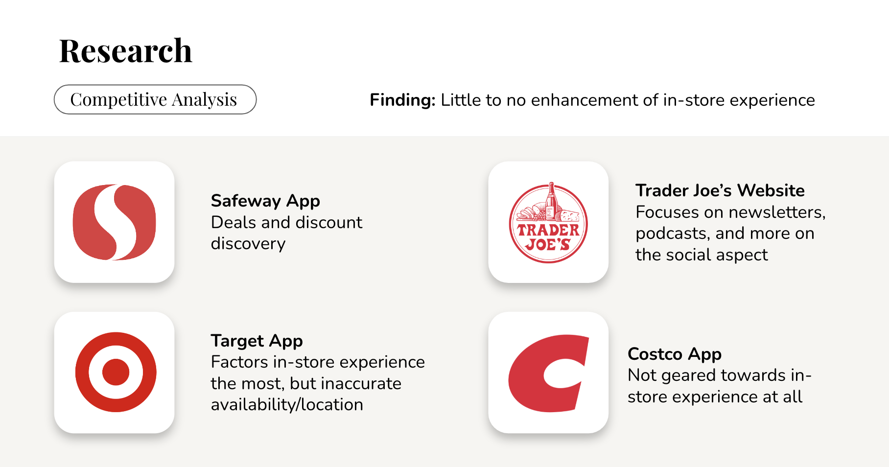
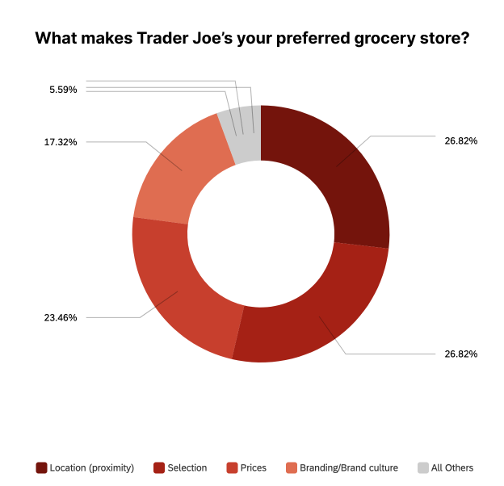
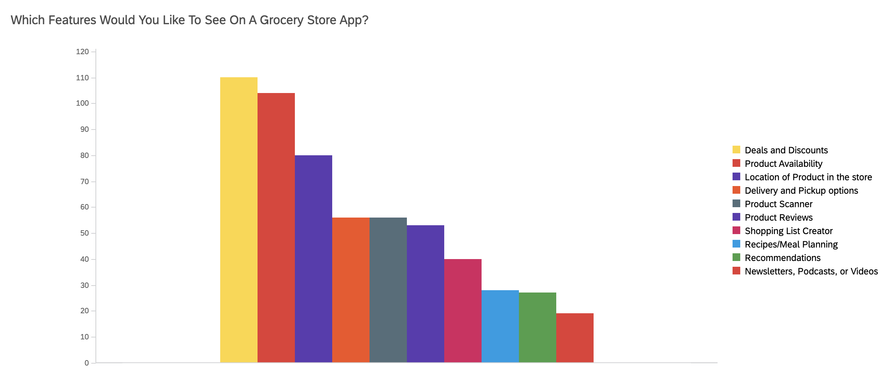
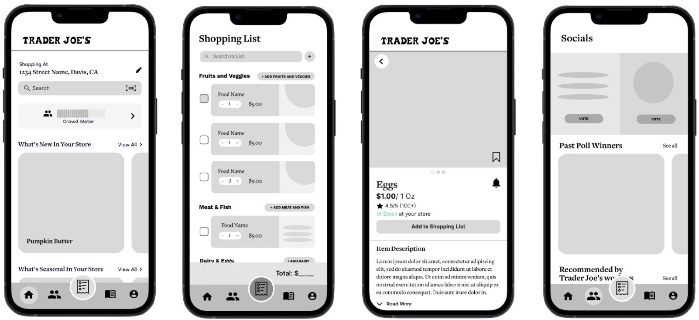

Trader Joe's

Overview
Trader Joe’s has developed a unique culture of their brand with their own collection of products and cult following, bringing up the opportunity to cater to their customer base through an application. With this in mind, we worked on a Trader Joe’s app across the course of six weeks.
Collaborators
Karen Dang, Isabel Shic, Kaitlyn Lam,
Nava Babei (Project Manager)
Role
UX Research Lead, UX Design
Duration
6 weeks
October 2022 - November 2022
Tools
Figma, Qualtrics
Research
Competitor Analysis
In order to get a better sense of potential features, we conducted a competitive analysis with various existing grocery store apps, including Safeway, Costco, and Target. We found that these applications didn’t enhance much of the in-store grocery shopping experience. Since Trader Joe's prides itself in its excellent in-store experience, we made this the focus of our design.
Survey
For our primary research, we conducted a survey because it enabled us to gather the most data in the least amount of time and reach various demographics. We began by brainstorming questions for our survey. First, we wanted to learn about users’ basic background information to understand the makeup of our respondents, and it will become useful when we select potential interviewees. Next, we wanted to learn about their grocery shopping experience, such as which stores they prefer and why, as well as, whether they use any existing grocery store apps. Finally, we wanted to see how they engage or not engage with existing grocery store apps and what they are looking for in a good grocery store app. We made sure to not word questions that may result in bias or include any leading questions.
We created the survey on Qualtrics and began collecting data by posting our QR code and URL in various group chats and group pages, as well as, canvassing at our local Trader Joe’s. Over the span of 2 weeks, we collected over 225 responses.
Survey Demographic
As students and mainly distributing the survey with our peers, 78.92% of our respondents are between the ages of 18-25. We are aware that our data does not represent the entire population and is very biased toward the students and the Gen Z generation.
Survey Results
Respondents who considered Trader Joe’s their preferred grocery store shared that they prefer it because of its location (26.84%), selection (26.84%), and prices (23.46%).
The most wanted features on a grocery app are deals and discounts (61.45%), product availability (58.10%), and location of the product in the store (44.69%).
User Journey Map
We also created a user journey map using these insights to connect with our user in terms of the phases they go through and how they are feeling and act in each stage. Through this process, we found many potential user pain points and helped us better empathize with our users.

Synthesis of Data
After gathering survey responses, conducting user interviews, and creating a user journey map, we noticed similar pain points arose among them.
Pain Points
01
Product Availability
Brought up during our survey, interviews, and user journey, not knowing whether a product was in stock was the most common pain point. Due to its constant change in selection and consistently sold out products, many users have gone to Trader Joe's only to find products out of stock or pulled from shelves.
“Trader Joe’s runs out of stock quickly. It would be nice to know when stock runs out ahead of time.”
02
Forgetting Items
Forgetting to purchase items they planned on purchasing causes users to have to make an extra trip or change recipes.
“I forget to purchase things and I only realize it after returning home.”
03
Shopping When The Store Is Busy
Users want to avoid going to Trader Joe's when it is too busy because it is hard to get around the store and check out takes a long time.
“It’s hard to get around when there’s a lot of people. I try to [shop] when it is less busy.”
04
Lack of Social Features
Fans of Trader Joe's wanted social features such as being able to share their thoughts on different products and view other's reviews to discover new products. Though there are currently platforms that fans can use for this purpose, there are way too many different platforms resulting in a scattered experience.
“I wish there was a fan club feature to share reviews and vote for favorite items. ”
Pain Points We Chose Not To Focus On
01
Price/ Deals & Discounts
From our research, we learned that users care the most about price when shopping at Trader Joe's and mainly use other grocery store apps to find deals and discounts; however, we chose not to focus on this pain point to stay true to Trader Joe's brand culture because Trader Joe's almost never has any deals and prides itself as having some of the lowest prices.
02
Location of Product
One popular feature that our survey respondents wanted to see in a grocery store app was the location of the product. However, though this may be useful for other grocery stores, this would not fit well with Trader Joe's due to the following reasons:
- Trader Joe's does not currently have an existing store organization system unlike Target or Safeway which label their aisles. We did not want to invent a new store organization system which would confuse users.
- Trader Joe's prides itself in its excellent store experience, thus the goal is to have shoppers naturally walk around the store and explore all of its products.
- The store is so small that users can easily find all the items they need with minimal effort.
Ideation
We synthesized our data from user surveys and interviews through affinity mapping and developed three main insights:
- Saving time and money is a priority for users
- Users enjoy the Trader Joe’s store experience when it comes to branding, visuals, and product selection
- Users, especially loyal Trader Joe’s fans, want a stronger social experience/sense of community

Problem Statement
From these insights, we came up with our How Might We statement:
How might we enhance the Trader Joe’s store experience through efficiency and brand familiarity with a virtual app?
Low Fidelity Wireframes

We began ideating by coming up with solutions for each pain point. We presented our ideas in the form of individual low fidelity sketches and proceeded to vote internally on features we each liked the most. After compiling a list of our favorite features, we did one final sketch of all the features we wanted to include in our mid-fidelity prototype.
Mid-Fidelity Prototype
We created a mid-fidelity prototype based off of our final low-fidelity sketch. The basic skeletal framework of the app allowed us to focus on functionality over appearance.
Usability Testing
To test our mid-fidelity prototype, we created a set of tasks for each stage of the grocery shopping process to test the user’s ability to navigate the app and asked about overall first impressions.
- The first stage reflected the pre-store experience, in which we prompted users to check how crowded their store was, find products, and create a shopping list.
- The next task reflected the in-store experience, during which users interacted with the product scanner and checked items off of their shopping list.
- Lastly, the post-store experience consisted of writing reviews of products and saving them to collections for future reference.
Our main findings included:
- Social Page had a lot of overlapping features with other pages
- Confusion over the wording of our crowd meter
- Shopping list was not efficient
- Confusion over the flow to add an item to a Collections
- Too many features confused users
High Fidelity Prototype

Onboarding
The many features might be confusing for new users, so an onboarding section is available to introduce the different features and result in a smoother user flow. To brush up their memory, users can access the Onboarding Pages on the Home Page at any time.
Home Page
Designed to enhance the in-store experience. Key features on this page include a crowd meter, easy access to view all new and seasonal products, and a product scanner to quickly learn more about a product or add it to their shopping list.


Shopping List
Users can create a shopping list before they go to the store so they never forget to purchase an item. The shopping list is divided by category to make it easier to navigate. Users can use the add button to add items directly from the Shopping List Page so they do not need to navigate to a new page.
At the store, users can check off items on their shopping list as they place the item in their cart. Once an item has been checked off, the cost of the item will be added to the total, so users can always stay within budget, a user pain point that came up during our research. To quickly get the total of the whole list, users can use the select all button. To delete the list and start a new list, users can click clear all.
Collections
Users can bookmark items and organize them into different Collections, which can accessed through the Profile Page.


Product Alerts
Users have access to 4 types of product alerts so they never miss a product.
Restock Alert for out of stock items.
Back In Season Alert to notify users that their favorite seasonal items are back.
Out of Season Alert to remind users to stock up on their favorite seasonal items before they leave the shelves.
Discontinued Soon Alert to alert users to stock up on their favorite items before they are discontinued indefinitely.
Socials Page
Users can add their contacts as friends to view each other's Collections and reviews.

Onboarding
The many features might be confusing for new users, so an onboarding section is available to introduce the different features and result in a smoother user flow. To brush up their memory, users can access the Onboarding Pages on the Home Page at any time.
Home Page
Designed to cater towards the in-store experience. Key features on this app include a crowd meter, easy access to view all new and season products, and a product scanner to learn more about and product or add it to their shopping list.
Shopping List
Users can create a shopping list before they go to the store so they never forget to purchase an item. The shopping list is divided by category to make it easier to navigate. Users can use the add button to add items directly from the Shopping List Page so they do not need to navigate to a new page.
At the store, users can check off items on their shopping list as they place the item in their cart. Once an item has been checked off, the cost of the item will be added to the total, so users can always stay within budget, a user pain point that came up during our research. To quickly get the total of the whole list, users can use the select all button. To delete the list and start a new list, users can click clear all.
Collections
Users can bookmark items and organize them into different Collections, which can accessed through the Profile Page.
Product Alerts
Users have access to 4 types of product alerts so they never miss a product.
Restock Alert for out of stock items.
Back In Season Alert to notify users that their favorite seasonal items are back.
Out of Season Alert to remind users to stock up on their favorite seasonal items before they leave the shelves.
Discontinued Soon Alert to alert users to stock up on their favorite items before they are discontinued indefinitely.
Socials Page
Users can add their contacts as friends to view each other's Collections and reviews.
Design System
With sketched graphics and a familiar color scheme resembling the Trader Joe’s website and packaging, we hope our app captures the unique Trader Joe’s shopping experience.

Presentation Day
We presented our project to a panel of industry professionals on Presentation Day, an event hosted by Design Interactive, the first UX organization at UC Davis. We were awarded the Audience Choice Award and the Best Storytelling Award.

Takeaways
This was my first time being user research lead and it was quite intimidating since I have never lead any part of a design sprint before; however, it proved to be a valuable experience as now I gained experience delegating tasks, spearheading user research, and experimenting with various methods to gather data. This was also my first time using Qualtrics and it definitely changed the game for me when it comes to creating surveys as there is a lot more customization that I can do, as well as, different ways to display data.
Another important skill I learned was working with a design system. Previously, I had a poor habit of designing without a comprehensive design system, which resulted in unconsistent designs especially when I worked with other team members. Though creating the design system did take time, it proved to be extremely useful in making sure all of our designs were uniform and changes could easily be made.
Challenges
Our biggest challenge was that we had many features in mind (i.e. socials page with poll voting, featured customer reviews, having different grocery lists) and had to eliminate/reorganize these features.
Next Steps
Given more time, I would like to focus on interviewing more loyal fans of Trader Joe’s as opposed to just casual shoppers. I would also like to conduct more usability tests on the high fidelity prototype to improve the user flow.
In addition, I would also like to develop the following features that my team and I previously ideated but were not able to get to:
- Expand Social Page to promote interaction between friends such as the addition of collaborative Collections
- Ability to submit recipes to be shown on the Recipes Page
- Add a feature that allows customers to report product availability for better accuracy